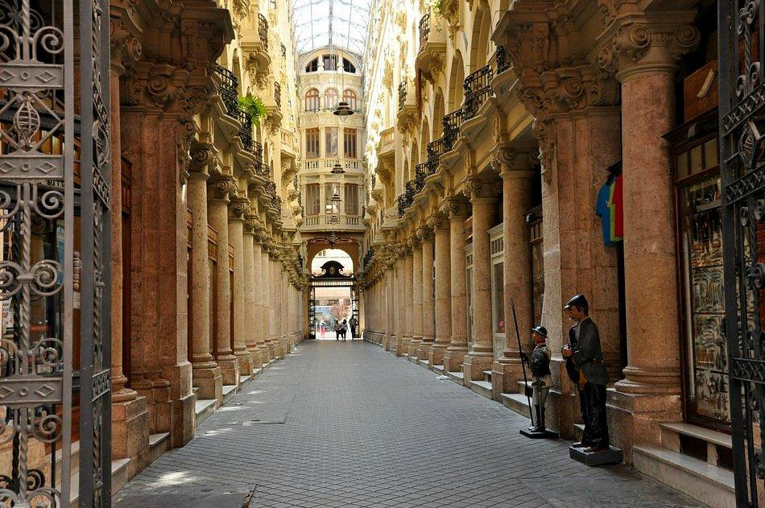
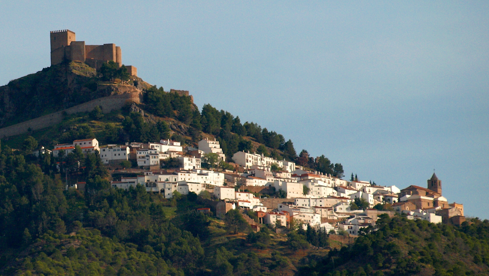

Descubre Albacete: Puerta de La Mancha
Visitas imprescindibles, gastronomía, actividades...
Ver Imprescindibles
Visitas imprescindibles, gastronomía, actividades...
Ver ImprescindiblesPlaza del Altozano, s/n.